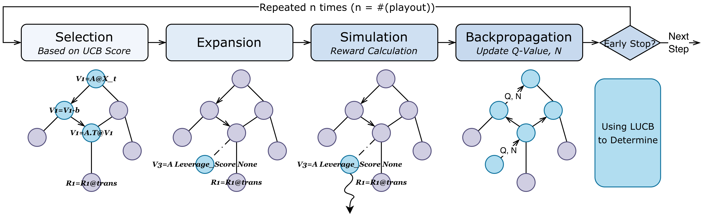

An RL framework that automatically discovers interpretable, symbolic RLA algorithms from first principles—no pretrained priors, no black-box outputs.
Randomized linear algebra (RLA) algorithms are a modern class of numerical linear algebra techniques that play an essential role in scientific computing and machine learning, with broad and growing adoption. However, their discovery remains mostly a manual process that requires deep expert knowledge and inspiration. While Reinforcement Learning (RL) offers a pathway to automation, standard approaches struggle with sparse reward landscapes and vast search spaces inherent to high-performing RLA algorithms.
In this paper, we present RL4RLA, a general RL framework that automates the discovery of interpretable, symbolic RLA algorithms. Unlike black-box approaches, our method builds explicit algorithms from basic linear algebra primitives, ensuring verifiable and implementable representations. To enable efficient discovery, we introduce:
We demonstrate that RL4RLA rediscovers state-of-the-art methods, including sketch-and-precondition solvers, Randomized Kaczmarz, and Newton Sketch, and can be targeted to produce algorithms optimized for specific trade-offs between accuracy, speed, and stability. Code is available at github.com/Tim-Xiong/RL4RLA.
RL4RLA frames algorithm discovery as building symbolic programs from linear-algebra primitives. Four components work together to make discovery tractable.

Each candidate algorithm is an explicit symbolic program $\mathcal{A} = (\mathcal{P}_{\text{setup}}, \mathcal{P}_{\text{iteration}})$ built from typed linear-algebra primitives (SKETCH, HHQR, MATVEC, INV, …). Programs are directly executable and human-inspectable.
A sequence of staged refinements progressively increases problem difficulty. Each stage introduces exactly one failure mode (ill-conditioning, non-square, high-leverage) resolved by one new algorithmic component. Deep search becomes a chain of shallow problems.
MCGS operates on a DAG rather than a tree, merging equivalent partial algorithms reached via different action orderings. This reduces growth from $O(b^d)$ tree nodes to $O(|\mathcal{S}|)$ unique states, achieving 2–3× search cost reduction.
Starting from an empty program, RL4RLA navigates a DAG of increasingly sophisticated RLA algorithms. Hover over nodes to learn about each method.
Constructs a cheap randomized preconditioner from a sketched version of $A$. Given $Ax=b$, a sketching operator $S \in \mathbb{R}^{s \times m}$ yields $SA = QR^{-1}$ such that $\kappa(AR) = \mathcal{O}(1)$, enabling fast preconditioned gradient updates. Recovers the core idea behind Blendenpik and LSRN.
Updates iterates by projecting onto randomly sketched subsystems. At each step, solves a small projected problem: $x_{t+1} = \arg\min_x \|x-x_t\|^2 \text{ s.t. } S_t Ax = S_t b$. Recovers Randomized Kaczmarz (single-row) and Block Randomized Kaczmarz (multi-row sketch).
Directly solves a sketched least-squares problem: $\tilde{x} = \arg\min_x \|SAx - Sb\|^2$. Discovered on large overdetermined systems when edit distance is small, reducing complexity while preserving accuracy.
Approximates the Hessian $H_t = A^\top D_t A$ via sketching: $\hat{H}_t = (SD_t^{1/2}A)^\top (SD_t^{1/2}A)$, reducing complexity from $O(mn^2)$ to $O(smn)$ while maintaining superlinear convergence. Applied to logistic regression. Only the full curriculum achieves 100% success; all partial curricula fail.
Deep algorithmic search is decomposed into shallow staged refinements. Each stage introduces one failure mode resolved by one new component. Click a stage to explore the progression.
Standard MCTS treats the search space as a tree, causing exponential redundancy. MCGS merges equivalent states into a DAG, dramatically reducing search cost.
UCD action selection (corrects UCT's over-exploration on multi-parent nodes):
$$a' = \arg\max_{a \in \mathcal{A}(s)} \left[ \hat{Q}(s,a) + c \sqrt{\frac{\log N(s)}{N(s')}} \right]$$Number of unique algorithmic states $|S|$ versus playout index. MCTS expands nearly linearly; MCGS saturates earlier, consistent with frequent transpositions and node merging.
Revisit rate $1 - |S|/|V|$ versus playout index, where $|V|$ is total node visits. MCGS sustains a higher revisit rate throughout search, indicating greater reuse of shared states.
RL4RLA evaluated across five curricula. MCGS+UCD consistently achieves the lowest playout cost and best wall-clock time while maintaining competitive success rates.
| Target Algorithm | Method | Total Playouts ↓ | Time (s) ↓ | Success Rate |
|---|---|---|---|---|
| Preconditioned Weighted SGD | MCTS | 34,902 | 380.7 | 75% |
| MCGS+UCT | 13,037 | 193.2 | 80% | |
| MCGS+UCD | 10,721 | 191.1 | 80% | |
| Block Randomized Kaczmarz | ||||
| MCTS | 66,468 | 468.0 | 75% | |
| MCGS+UCT | 38,469 | 307.8 | 80% | |
| MCGS+UCD | 25,158 | 205.0 | 75% | |
| Subsampled Least Square GD | ||||
| MCTS | 15,847 | 10.4 | 75% | |
| MCGS+UCT | 7,230 | 8.3 | 80% | |
| MCGS+UCD | 5,061 | 8.9 | 80% | |
| Sketched Preconditioned GD | ||||
| MCTS | 17,655 | 142.9 | 75% | |
| MCGS+UCT | 8,030 | 54.8 | 80% | |
| MCGS+UCD | 6,034 | 58.4 | 75% | |
| Newton Sketch † | ||||
| MCTS | 2,557 | 5,949.6 | 100% | |
| MCGS+UCT | 2,682 | 5,265.4 | 100% | |
| MCGS+UCD | 1,416 | 4,480.9 | 100% | |
† Full four-stage curriculum required; all no-curriculum and partial-curriculum variants achieve 0% success. 20 runs per transition; LUCB early stopping.
As compositional depth increases, MCGS variants show pronounced advantages. On shallow targets all methods are comparable; on deep targets MCGS+UCD leads significantly.
Shallow target: all three methods discover the algorithm quickly, with MCGS variants having a slight edge.
Compositional target: MCGS variants show pronounced left shift; MCTS requires roughly 3× more playouts.
Most compositional target: largest separation between methods. MCGS+UCD concentrates below 23k playouts; MCTS median exceeds 50k.
Domain adaptation requires only a thin interface layer. The core MCGS + curriculum logic transfers intact.
| Stage | Size | κ(A) | Discovered | SR |
|---|---|---|---|---|
| C0 | $n=5$ | $\approx 2$ | Power Iteration | 100% |
| C1 | $n=50$ | $\approx 10^2$ | Power Iteration | 100% |
| C2 | $n=500$ | $\approx 10^2$ | Sketched Power Iter. | 100% |
5 seeds; MCGS+UCD. All three stages succeed.
$\rho(x_t)$ over iterations; $\rho=1$ indicates exact recovery of $\lambda_{\max}$. C0/C1 rediscover power iteration; C2 (large $n$) rediscovers sketched power iteration.
Performs code-level optimizations (JIT, library swaps) on existing implementations. Produces dense deterministic solvers (Cholesky, LAPACK lstsq, L-BFGS) in all 5 variants. Does not compose new algorithmic structures.
Relies on pretrained LLM as mutation operator. Biases search toward training distribution. Scales poorly across diverse linear systems — higher runtime and noncompetitive residuals on both well-conditioned and ill-conditioned problems.
No pretrained priors. Searches explicitly over typed symbolic programs. Discovers interpretable RLA primitives: sketching, preconditioning, importance sampling — from scratch.
@inproceedings{xiong2026rl4rla, title = {RL4RLA: Teaching ML to Discover Randomized Linear Algebra Algorithms Through Curriculum Design and Graph-Based Search}, author = {Xiong, Jinglong and Liu, Xiaotian and Wang, Ruoxin and Liu, Zihang and Zhou, Yefan and Yan, Yujun and Yang, Yaoqing}, booktitle = {Proceedings of the 43rd International Conference on Machine Learning (ICML)}, year = {2026}, eprint = {2605.18004}, archivePrefix = {arXiv}, url = {https://arxiv.org/abs/2605.18004}, }